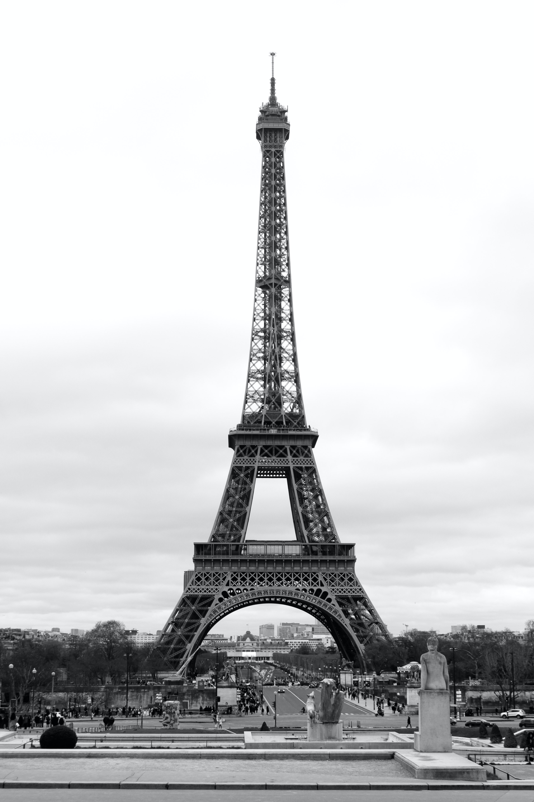
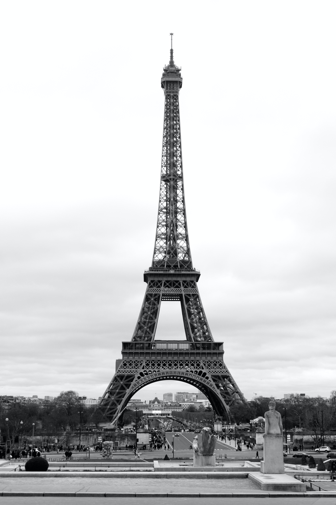

Bem-vindo ao NossoRoteiroEuropa
Se você é um apaixonado por viagens e sonha em explorar os encantos da Europa, você está no lugar certo. NossoRoteiroEuropa.com é o seu guia completo para os destinos turísticos mais deslumbrantes e icônicos da Europa. De cidades históricas a paisagens naturais de tirar o fôlego, estamos aqui para inspirar e informar sua jornada inesquecível pelo Velho Continente.
Por que Explorar a Europa Conosco?
1. Roteiros Curados: Nossos especialistas em viagens meticulosamente criaram roteiros que abrangem desde os destinos imperdíveis até os segredos bem guardados da Europa. Quer você esteja interessado em uma aventura urbana, uma viagem romântica ou uma busca por beleza natural, temos o itinerário perfeito para você.
2. Dicas Locais: Queremos que sua experiência seja autêntica. Nossas dicas locais fornecem insights valiosos sobre os melhores lugares para comer, os eventos culturais que estão acontecendo e as joias escondidas que só os moradores conhecem.
3. Inspiração Visual: Navegue pela nossa galeria de fotos deslumbrantes e deixe-se encantar pela diversidade de paisagens que a Europa oferece. Desde os penhascos dramáticos da costa até as majestosas montanhas alpinas, cada imagem conta uma história única.
Destaques Imperdíveis:
1. Paris, França: A Cidade das Luzes aguarda com seus ícones mundialmente famosos - a Torre Eiffel, o Louvre e as charmosas margens do rio Sena. Delicie-se com croissants frescos enquanto passeia pelas ruas de paralelepípedos de Montmartre.
2. Veneza, Itália: Navegue pelos românticos canais de Veneza e mergulhe na rica história e cultura desta cidade única. A Praça São Marcos e a Basílica de São Marcos são imperdíveis.
3. Santorini, Grécia: Com suas casas brancas contrastando com o azul intenso do mar Egeu, Santorini é um paraíso fotográfico. Assista ao pôr do sol em Oia e aproveite praias de areia vulcânica.


 
